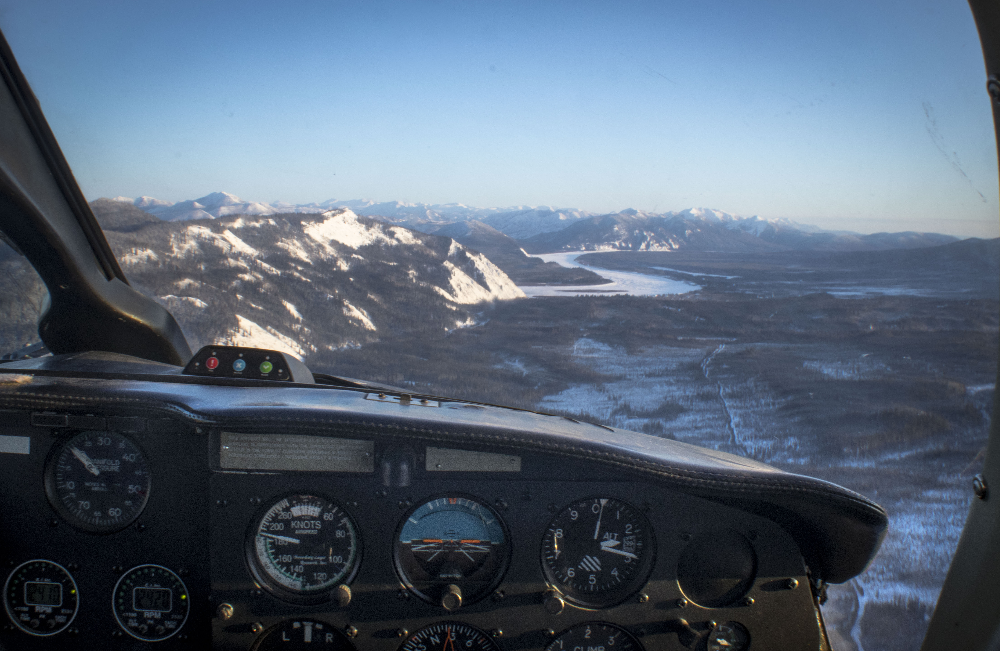

Special Delivery: Pilots haul 900 pounds of food, supplies to checkpoint in preparation for Yukon Quest
By Laura Stickells | January 25, 2020
The Yukon River comes into focus as one of the planes carrying supplies approaches Eagle. Photo by Laura Stickells
EAGLE, ALASKA — Three twin-engined planes delivered 900 pounds of dog food, human food and supplies to the Eagle checkpoint on Saturday for the Yukon Quest 1,000 Mile International Sled Dog Race. The only thing forgotten in Fairbanks was a hand of bananas.
Todd Mackinaw, who’s flown Quest supplies to Eagle for 10 years on behalf of race donor Warbelow’s Air Ventures, always brings the bunch of fruit for longtime Eagle resident and race volunteer John Borg.

Eagle is home to about 100 residents and sits at a bend on the Yukon River five miles west of the Canadian border. During the summer the Taylor Highway connects the town to the rest of the state, but in the winter it’s only reachable by airplane, snowmachine or dog team.
On Saturday’s 200-mile flight to the checkpoint, Mackinaw recalled a time 10 years ago when he was talking to Borg about the logistics of living in the town during the winter.
Borg has called Eagle home for 52 years — he served as the town’s postmaster for 28 — and in the winter he makes just two flights to Fairbanks to replenish supplies. The only thing he wished he had more of was fresh fruit. Bananas, in particular.
“I’ll try to bring some if I end up flying here during the race,” Mackinaw said, concluding his story.
But when the planes landed, Borg was thrilled to see the pilots and passengers despite the fact they didn’t come bearing bananas.
“It’s a highlight for Eagle to have this commotion going on during the month because otherwise it’s pretty still,” said Borg, who’s helped put together the town’s checkpoint every year since the race began in 1984.
Mackinaw agreed with Borg. After making the supply run for 10 years he understands the meaning the race holds for the town.
“If you were in Pasadena you’d get excited about the Rose Bowl Parade, right? Well if you’re in Eagle you get excited about the Quest,” he said. “And it marks the change in getting over the tough part of winter.”
Although the crisp 25 below air still felt like a sure sign of winter on Saturday, the cloudless blue skies were enough to make everyone agree it was a beautiful day.
For Borg, the best part about the Quest is meeting the mushers, race officials, volunteers and media members that pass through.
He spends the week listening to an aircraft radio, waiting at the end of the snow-covered runway in his blue 1970 Chevrolet pickup for every arriving plane. The passengers climb in the back and Borg drives them the one and a half miles to the town’s one-room schoolhouse, which serves as the official checkpoint. When it’s time for them to fly out he drops them off.
On Saturday, however, the pilots and passengers stepping off the three Piper Navajos were greeted by a group of snowmachines towing sleds. The Chevy was having a hard time starting in the low temperatures, but Borg was confident he’d have “him” running by race time.
Borg and a handful of other local volunteers helped transfer the supplies from the planes to the sleds.
Each sled was piled high with the mushers’ gunny sacks, filled with their necessities for the 150 miles of trail between Eagle and the next checkpoint in Dawson City, and other random items required to run the checkpoint, before zipping off to the school.
The Eagle checkpoint, which has a mandatory four-hour layover, is known along the race route for its hospitality.
Of the nine checkpoints, Eagle is the only one unreachable by vehicle. The other checkpoints have supplies delivered by truck.
The Quest begins at 11 a.m. Saturday in downtown Fairbanks.